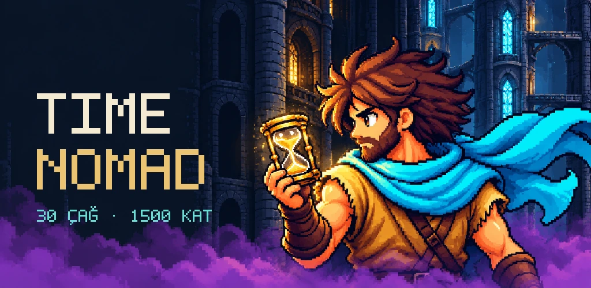
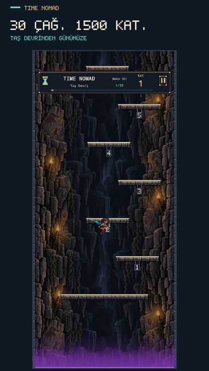
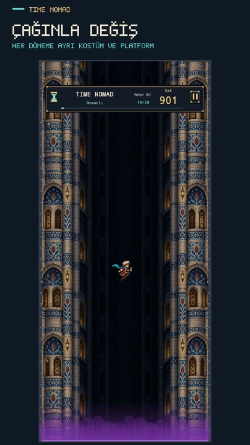
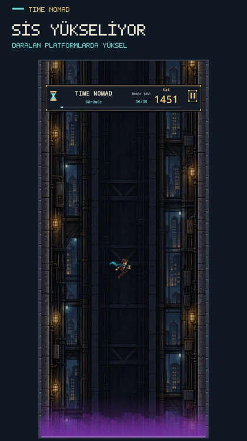

Zaman dağıldı.
Sen yüksel.
Kule, çağları birbirine bağlıyordu. Saat durduğunda bağlar koptu, mor sis yükselmeye başladı. Nomad’a yol göster; zamanın altı parçasını yeniden birleştir.
Google Play’de açŞu anda test aşamasında. Erişim için testçi daveti gerekebilir.

Taş devrinden bugüne.
Karakterin kendiliğinden zıplar. Parmağını sağa ve sola sürükleyerek inişini yönlendir. Çağlar değiştikçe dünya, kostüm, platformlar ve müzik de değişir. Yükselen sise yakalanmadan bir sonraki basamağa ulaş.



Yolculuk
30 çağı keşfet, saatin altı parçasını bul. Her beş çağda açılan kayıt noktalarıyla kaldığın yerden devam et; parçaların hatıraları kulenin öyküsünü tamamlasın.
Rekor
Her deneme en alttan başlar. Devam hakkı olmadan tek turda ne kadar yükselebileceğini gör. Hedefin, kendi en iyi katını geçmek.
Açık kurallar, sade oyun.
Çağlar ve kostümler ilerledikçe açılır; ek güç satılmaz. Yolculuk’ta tur başına bir isteğe bağlı reklamla devam edebilirsin. Ana menüden Rekor’a giriş ücretsizdir. Sonuçtaki Tekrar Dene altında “tek reklam ile” yazıyorsa, yeniden denemeden önce en fazla bir reklam gösterilir. İki geçiş reklamı arasında en az 90 saniye vardır. Sonuç ve liderlik ekranları reklam açmaz.
Reklamları kaldırma, aynı tek devam hakkını reklam izlemeden sunan kalıcı bir satın alımdır. Mağaza kullanılabilirliği ve fiyatı Google Play’de gösterilir.
14 arayüz dili · Android
Bir sorunda yanındayız.
Geri bildirim ve gizlilik talepleri: ilgun.abdurrahim@gmail.com